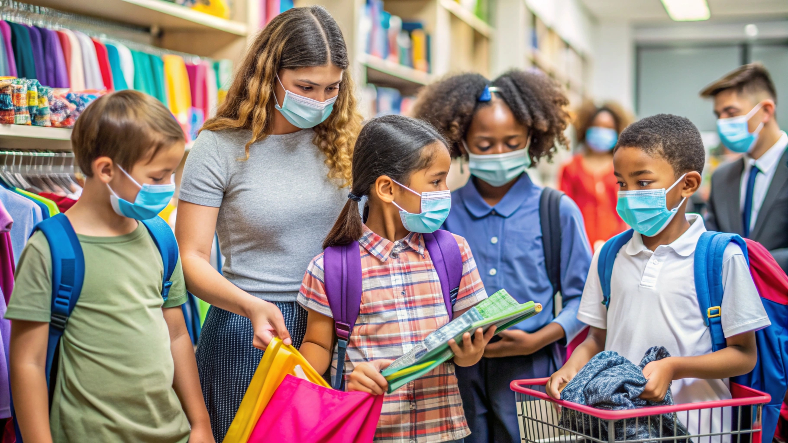

Projeto: Reforço Escolar para Todos
EducaçãoONG: **Amanhã Melhor**
Oferece aulas de reforço e oficinas de arte e cultura para 200 crianças em comunidades carentes. Precisamos de professores voluntários!

Projeto: Lar Temporário Amigo
AnimaisONG: **Quatro Patas Felizes**
Foco no resgate, tratamento e esterilização de animais de rua. Já salvamos mais de 500 vidas. Precisamos de ração e medicamentos.

Projeto: Guardiões da Mata Atlântica
Meio AmbienteONG: **Refloresta Brasil**
Plantio e monitoramento de 10.000 mudas nativas da Mata Atlântica. Precisamos de voluntários para os mutirões de plantio.

Projeto: Saúde na Comunidade
SaúdeONG: **Mão Amiga**
Levamos atendimento médico e odontológico gratuito para regiões de difícil acesso. Precisamos de doação de kits de higiene.

Projeto: Capacitação Profissional Jovem
EducaçãoONG: **Futuro Mais**
Oferece cursos técnicos e profissionalizantes para jovens de baixa renda. Voluntários com experiência em TI são bem-vindos!